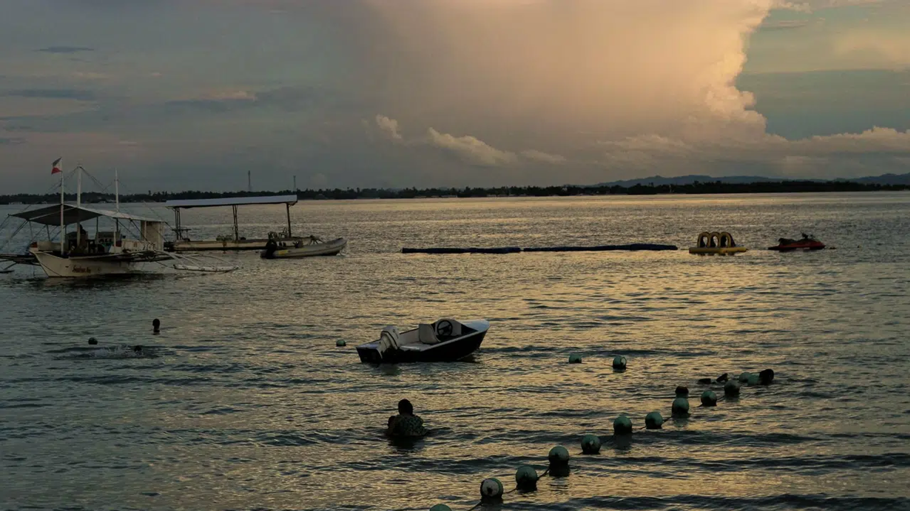

Where to Arrive
Hadsan Beach Park, Lapu-Lapu City, Mactan, Cebu, Philippines.
This page helps guests plan their arrival, launch-site preparation, travel timing, and basic stay arrangements before a Mesopelagic Anglers charter from Hadsan Beach Park, Mactan, Cebu.

Charters operate from Hadsan Beach Park in Lapu-Lapu City, Mactan, Cebu. Guests should plan arrival time around the selected session and allow enough time for briefing, loading, and preparation.
Hadsan Beach Park, Lapu-Lapu City, Mactan, Cebu, Philippines.
Arrive earlier than the departure time so the crew can brief guests, organize gear, and load provisions.
Prepare meals, snacks, drinks, sun protection, non-slip footwear, light layers, medication, and waterproof storage.
Preparation depends on the session you booked. Morning, nocturnal, and full-day trips require different timing, food planning, clothing, and post-trip handling.

5:00 AM Departure
For early departures, guests should consider staying close to the launch area the night before. This helps reduce delays and gives the group more time for briefing, loading, and final preparation.

Night Fishing Format
Night sessions are longer and more physically demanding. Guests should bring enough food, drinks, light layers, comfort items, and personal essentials for an overnight offshore schedule.

After Docking
If guests intend to keep their catch, they should prepare transport containers or coordinate how fish will be carried after docking. This is especially important after longer sessions or larger catches.
Review your selected session time before arranging transportation or accommodation. For questions about arrival timing, launch-site expectations, or session preparation, send your inquiry before the charter.